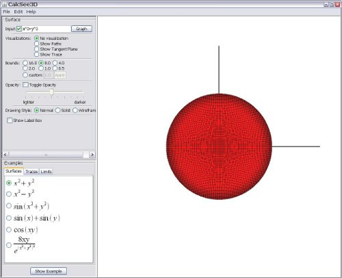

Chapter 1: Introduction
- Chapter 1: Introduction
- Chapter 2: Traces Visualization
- Chapter 3: Tangent Plane Visualization
- Chapter 4: Limit Path Visualization
- Chapter 5: Suggested Uses of Visualizations
Getting Started
When you first run CalcSee3D, you will see a window similar to this:
The large white area with the red circle is the 3D window and is currently displaying a surface that appears circular from this angle. In the upper left, there is the Surface panel, which allows users to input a function to graph, adjust how it is drawn, and display a visualization. In the bottom left, there is the examples panel, where users can select a sample function to display.
Navigating the 3D window
In order to rotate the currently displayed surface, left-click in the 3D window and drag the mouse in the desired direction to rotate the surface. To zoom in and out, simply use the scroll wheel on your mouse. If your mouse lacks a scroll wheel, you can also use Z / SHIFT-Z to zoom in / out.
Overview for Surface panel
The Surface panel contains all the important controls for adjusting what is displayed in the 3D window and how it is rendered.
Input function field
In the upper left there is an input field labeled “Input”. The small check box toggles the display of the surface, which can be useful if you want to see only the visualization. You can type a function into the text field and click “Graph” to display the function. For example, change the ‘+' to a ‘-'and click “Graph”. You should now see a new surface displayed that looks like the one below:
Changing the domain (bounds)
In addition to zooming in and out with the mouse wheel, you can choose to change the domain of the function which will enlarge or shrink the displayed surface. To do this, look in the Surface panel and find the label “Bounds”. By default, 8.0 should be selected, which means the function is being evaluated over a square region centered at the origin with x and y both between -8.0 and 8.0. You can change the domain two ways:
- Select a different bound like 4.0 or 1.0.
- Select “custom”, input a desired bound, and click “Apply”.
Opacity adjustment
To view a transparent surface, click the check box labeled “toggle opacity”. The surface should be a clear grey color. You can adjust the opacity by moving the slider to the left or right. This viewing mode is useful when looking at limit paths, because it lets the user see the complete paths without the surface obscuring parts of them.
Drawing mode
By default, CalcSee3D renders surfaces using a solid color overlaid with a black wireframe. You can view only the solid color or only the wireframe by selecting the corresponding radio box under “Drawing Style”.
Label Box
You can toggle a labeled wireframe box that displays the boundaries of the domain. To do this, click the check box labeled “show label box”.
Examples panel
CalcSee3D comes with a collection of function examples that allows the user to quickly display some important and neat looking surfaces. The white pane in the bottom-left is where you will find them.
The example functions are organized under three tabs: Surfaces, Traces, and Limits. The Surfaces tab contains common function examples. The Traces tab has a list of functions that have interesting traces. Finally, the Limits tab holds a number of surfaces that are discontinuous at the origin (not every surface is discontinuous however). To display a given example, select the appropriate radio box and click “Show Example”. These examples are meant to give you a good starting place for your experiments and give you ideas about the different behaviors of functions. You are strongly encouraged to alter the example functions to see how they change.
Settings dialog box
To change the setting in CalcSee3D, go to the menu bar and click Edit->Settings. A box will pop up that allows users to change the color scheme of the 3D window and the number of slices in a surface.

As the number of slices increases, the number of polygons used to render the surface increases, which results in a smoother looking surface. However, this also slows down the performance of CalcSee3D, so be mindful of this setting.